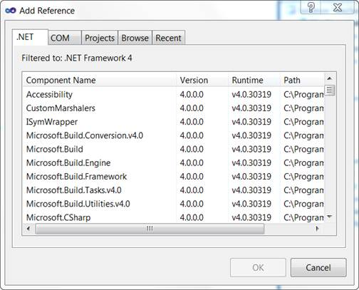
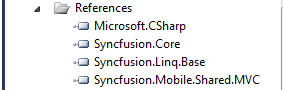

To add reference assemblies:
1. On the Solution Explorer, right-click the References folder.
2. Click Add Reference.

Figure 16: Add Reference Option Displayed on Right-Clicking the References Folder
 Note: The Add
Reference dialog box appears and the .NET tab is highlighted by default. The
assemblies for the MVC application are listed here.
Note: The Add
Reference dialog box appears and the .NET tab is highlighted by default. The
assemblies for the MVC application are listed here.

Figure 17: Add Reference Dialog Box
3. Select the following assemblies: Syncfusion.Core, Syncfusion.Linq.Base, and Syncfusion.Mobile.Shared.Mvc.
4. Click OK.
Note: The selected
assemblies are added under References.

Figure 18: Selected Assemblies Displayed Under the References Folder